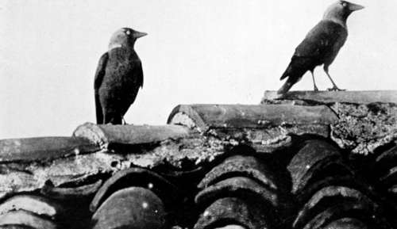

The Quest Of The Pelican : Albania. Part 3
Description
This section is from the book "Bird-Hunting Through Wild Europe", by R. B. Lodge. Also available from Amazon: Bird-Hunting Through Wild Europe.
The Quest Of The Pelican : Albania. Part 3
A Reeve (Machetes pugnax) was shot out of a flock on April 25, and a Wood Sandpiper (Totanus glareola) out of another small flock feeding in a tamarisk swamp on April 26. In this same swamp was a Magpie's nest with six eggs.
On the same day I shot four Little Stints (Tringa minuta) out of a large number which swept past my hiding-place. These were all on migration on their way to Northern Europe, the Little Stints bound for far-distant Siberian tundras, where they will spend the short summer in nesting operations and return southwards again in the autumn.
This coast is, of course, famous for the great numbers of Woodcock which pass up and down, to and from their more northern breeding-quarters. Southern Albania, opposite Corfu, is well known to many English sportsmen, who resort there regularly for the excellent Woodcock shooting and also for an occasional Wild Boar.
Here, my friend B-, the Greek Consul, and one or two more, have the Woodcock shooting all to themselves, and very good sport they have sometimes. I can well remember his old Transylvanian shooting-cap, very much bashed in and broken at the crown, but with four or five rows of the small pin feathers from the wings of the Woodcock which had fallen to his gun fixed all round the hat. He had an excellent dog, a large English pointer, which was not only worth his weight in gold as a sporting dog, more especially for Woodcock, but was a most faithful friend and companion. Poor old Nero! I was very sorry to hear of his untimely death after my return home, because I knew well how much he would be missed. He was a very gentlemanly dog and exceedingly dignified in manner, while his exploits, both in love and war, were numerous and sometimes amusing. He was the biggest pointer, I think, I have ever seen ; and his height and strength were of great service in forcing his way through the tangled Albanian coverts after the 'cock,' while in his frequent fights it enabled him to hold his own against great odds. I have often seen him attacked by three or four of the town dogs at once, and he always came out of the ' scrap ' with honour, though not invariably without wounds, for he was covered with the scars of old battles.
It takes a good dog to hold his own against these dogs of Albania. They are like wolves in size and fierceness, and are exceedingly dangerous, for they attack a stranger with great determination. Often I have only kept them at a distance, after much difficulty, with the butt end of a gun. Perhaps the best way with all dogs is to throw stones. Even stooping as if to pick up a stone where there are none to pick up, very often suffices to make them turn tail when everything else fails. Sometimes I have had the satisfaction of sending them to the right about, howling, with a well-directed stone ; and once to my great delight I knocked the forelegs of one from under it with a half-brick, and sent it head over heels : this was in passing through a Roumanian village, where the dogs are nearly as big a nuisance as in Albania. But whatever happens you must not shoot one. I have heard of men who have been killed in retaliation for having shot a dog in self-defence. They are greatly valued by their owners, who depend upon them to guard their flocks and herds from wolves in the winter months. The most you can do in case of need is to knife them. It is at all events a sign of close quarters, and consequent necessity, and even then there would be trouble, and a big claim for compensation, if nothing worse. I have often felt to make sure that the handle of the big hunting-knife I always carried with my revolver was within reach and ready for use. On one occasion, while our boat was towing on the Danube, a big brute of a dog attacked the men on the bank with the tow-rope so savagely that I fired one barrel of my gun, striking the ground just in front of its nose. Even then it only retired very reluctantly and growling horribly.
Jackdaws (Corvus Monedula)
Besides the birds mentioned as belonging more exclusively to the lagoon, during April we saw many Blue Tits, Great Tits, Blackbirds, Missel Thrushes, Thrushes, Magpies, Rooks, Hooded Crows, Ravens, and Jackdaws. These last inhabited in great numbers the old Castle, and also the castle ruins at Dulcigno. Many of these Jackdaws appearing to be very light about the neck, I shot a series, and found them with more or less distinct whitish edges to the grey patch on the neck. As there is a supposed sub-species in Macedonia (Corvus monedula var. collaris) I preserved the skins of nearly a dozen in case they approached this form. I should say that it is merely a variation, by no means constant : some having the white collar much more distinct than others. A photograph of two perched on the roof of a neighbouring house shows the white rings fairly well.
They were very tame and familiar, nesting in the house-roofs and town walls, and walking about the streets, so I tried ground baiting the roof adjacent to the Consulate with bread for a few days, leaving a box covered over with a cloth, where I intended to place the camera. Then when they came freely the camera was placed in position on the parapet, with a string, and while I sat with a book in an open doorway, old Mirto, the other kavass, kept watch, and gave me notice when they were near.
There were two kavasses attached to the Consulate : Mirto, a Turk, and Marco, an Albanian. The former generally was on duty in the house and about the town. When making calls on the governor, or at any of the other consulates, Mirto walked ahead with a big brass-handled stick, and a pair of enormous silver-mounted revolvers in his waistband, while after dusk he carried a large lantern. Marco nearly always accompanied us on our excursions farther afield, and whenever I waited hidden up to photograph Pelicans he was always lying concealed among the bushes within hail, with his magazine carbine loaded and ready in case of any trouble.
Continue to:
- prev: The Quest Of The Pelican : Albania. Part 2
- Table of Contents
- next: The Quest Of The Pelican : Albania. Part 4